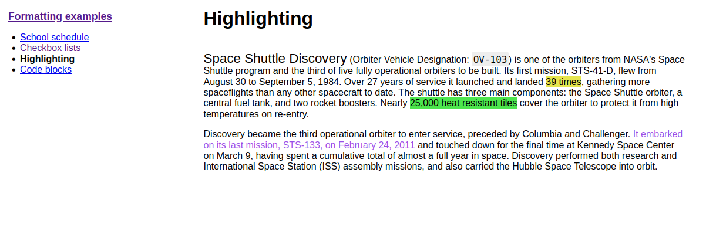

Sharing
Trilium allows you to share selected notes as publicly accessible read-only documents. This feature is particularly useful for publishing content directly from your Trilium notes, making it accessible to others online.
Prerequisites
To use the sharing feature, you must have a Server Installation of Trilium. This is necessary because the notes will be hosted from the server.
How to Share a Note
-
Enable Sharing: To share a note, toggle the
Sharedswitch within the note's interface. Once sharing is enabled, an URL will appear, which you can click to access the shared note.
-
Access the Shared Note: The link provided will open the note in your browser. If your server is not configured with a public IP, the URL will refer to
localhost (127.0.0.1).
Sharing a Note Subtree
When you share a note, you actually share the entire subtree of notes beneath it. If the note has child notes, they will also be included in the shared content. For example, sharing the "Formatting" subtree will display a page with basic navigation for exploring all the notes within that subtree.

Viewing All Shared Notes
You can view a list of all shared notes by clicking on "Show Shared Notes Subtree." This allows you to manage and navigate through all the notes you have made public.
Security Considerations
Shared notes are published on the open internet and can be accessed by anyone with the URL. The URL's randomness does not provide security, so it is crucial not to share sensitive information through this feature.
Password Protection
To protect shared notes with a username and password, you can use the #shareCredentials attribute.
Add this label to the note with the format #shareCredentials="username:password".
To protect an entire subtree, make sure the label is inheritable.
Advanced Sharing Options
Customizing the Appearance of Shared Notes
The default shared page is basic in design, but you can customize it using your own CSS:
- Custom CSS: Link a CSS Code note to the shared page
by adding a
~shareCssrelation to the note. If you want this style to apply to the entire subtree, make the label inheritable. You can hide the CSS code note from the tree navigation by adding the#shareHiddenFromTreelabel. - Omitting Default CSS: For extensive styling changes,
use the
#shareOmitDefaultCsslabel to avoid conflicts with Trilium's default stylesheet.
Adding JavaScript
You can inject custom JavaScript into the shared note using the ~shareJs relation.
This allows you to access note attributes or traverse the note tree using
the fetchNote() API, which retrieves note data based on its
ID.
Example:
const currentNote = await fetchNote();
const parentNote = await fetchNote(currentNote.parentNoteIds[0]);
for (const attr of parentNote.attributes) {
console.log(attr.type, attr.name, attr.value);
}Creating Human-Readable URL Aliases
Shared notes typically have URLs like http://domain.tld/share/knvU8aJy4dJ7,
where the last part is the note's ID. You can make these URLs more user-friendly
by adding the #shareAlias label to individual notes (e.g., #shareAlias=highlighting).
This will change the URL to http://domain.tld/share/highlighting.
Important:
- Ensure that aliases are unique.
- Using slashes (
/) within aliases to create subpaths is not supported.
Viewing and Managing Shared Notes
All shared notes are grouped under an automatically managed "Shared Notes" section. From here, you can view, share, or unshare notes by moving or cloning them within this section.

Setting a Custom Favicon
To customize the favicon for your shared pages, create a relation ~shareFavicon pointing
to a file note containing the favicon (e.g., in .ico format).
Sharing a Note as the Root
You can designate a specific note or folder as the root of your shared
content by adding the #shareRoot label. This note will be linked
when visiting [http://domain.tld/share](http://domain/share),
making it easier to use Trilium as a fully-fledged website. Consider combining
this with the #shareIndex label, which will display a list of
all shared notes.
Limitations
While the sharing feature is powerful, it has some limitations:
- No Relation Map Support
- Book Notes: Only show a list of child notes.
- Code Notes: No syntax highlighting.
- Static Note Tree
- Protected Notes: Cannot be shared.
- Include Notes: Not supported.
Some of these limitations may be addressed in future updates.
Attribute reference
| Attribute | Description |
|---|---|
shareHiddenFromTree
|
this note is hidden from left navigation tree, but still accessible with its URL |
shareExternalLink
|
note will act as a link to an external website in the share tree |
shareAlias
|
define an alias using which the note will be available under https://your_trilium_host/share/[your_alias]
|
shareOmitDefaultCss
|
default share page CSS will be omitted. Use when you make extensive styling changes. |
shareRoot
|
marks note which is served on /share root. |
shareDescription
|
define text to be added to the HTML meta tag for description |
shareRaw
|
Note will be served in its raw format, without HTML wrapper. See also Serving directly the content of a note for an alternative method without setting an attribute. |
shareDisallowRobotIndexing
|
Indicates to web crawlers that the page should not be indexed of this note by:
|
shareCredentials
|
require credentials to access this shared note. Value is expected to be
in format username:password. Don't forget to make this inheritable
to apply to child-notes/images. |
shareIndex
|
Note with this label will list all roots of shared notes. |